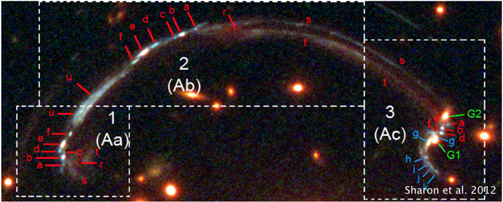
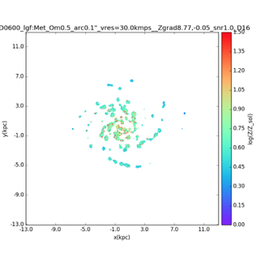
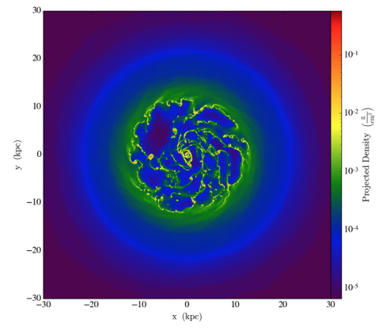

I am interested in galaxy evolution. Specifically, I quantify how properties of the ISM -- like metallicity, ionization parameter, pressure and electron temperature -- evolve with redshift, particularly in the high-redshift (1 < z < 4) regime.
Optical to infrared astronomy is perched at an exciting platform today, with large, space (JWST) and ground (GMT) based telescopes coming up. We will mostly be observing the rest-frame UV light from distant galaxies because the rest-frame optical spectra are redshifted beyond the telescope wavelength coverage. Before using the rest-frame UV light, it is crucial to understand what information the rest-frame UV emission lines carry. To devise and test the new UV diagnostics we take advantage of the magnification power of gravitational lensing. We apply the new rest-frame UV emission line diagnostics from Kewley et al. 2017 (submitted) and Nicholls et al. (in prep) and to a bright lensed galaxy at z~1.7. Once we understand how useful the different UV diagnostics are, we will apply them to our full sample of high-z UV spectra.
For this project I am working primarily with Lisa Kewley (ANU) and Jane Rigby (NASA goddard). The paper has been published in MNRAS. The IZIP code (extension of IZI, Blan et al. 2014) released with this paper can be found here.
 Simply observing the emission lines is not enough to infer the properties of galaxies, if we do not understand the impact of telescope limitations on the line fluxes. In this project we are trying to investigate what effect the various instrumental limitations have on the measured lines. In particular, we focus on the effect of telescope (spatial) resolution on the inferred metallicity gradient. How fine a resolution do we need to recover the true metallicity gradient of a galaxy?
We approach the problem by making synthetic position-position-velocity data cubes from simulations of isolated Milky Way-type galaxy (Goldbaum et al. 2016). This process involves modelling HII regions around young stars in the simulation and looking up photoionization model grids to estimate the emission line fluxes. We subsequently include the effects of noise as well as spectral and spatial smoothing to produce a synthetic data cube from which the metallicity gradient can be extracted. The idea is to build a generic pipeline so that we can input any simulation, in future, and output the mock data cube.
For this project I am primarily working with Mark Krumholz and Christoph Federrath. This paper has been published in MNRAS.